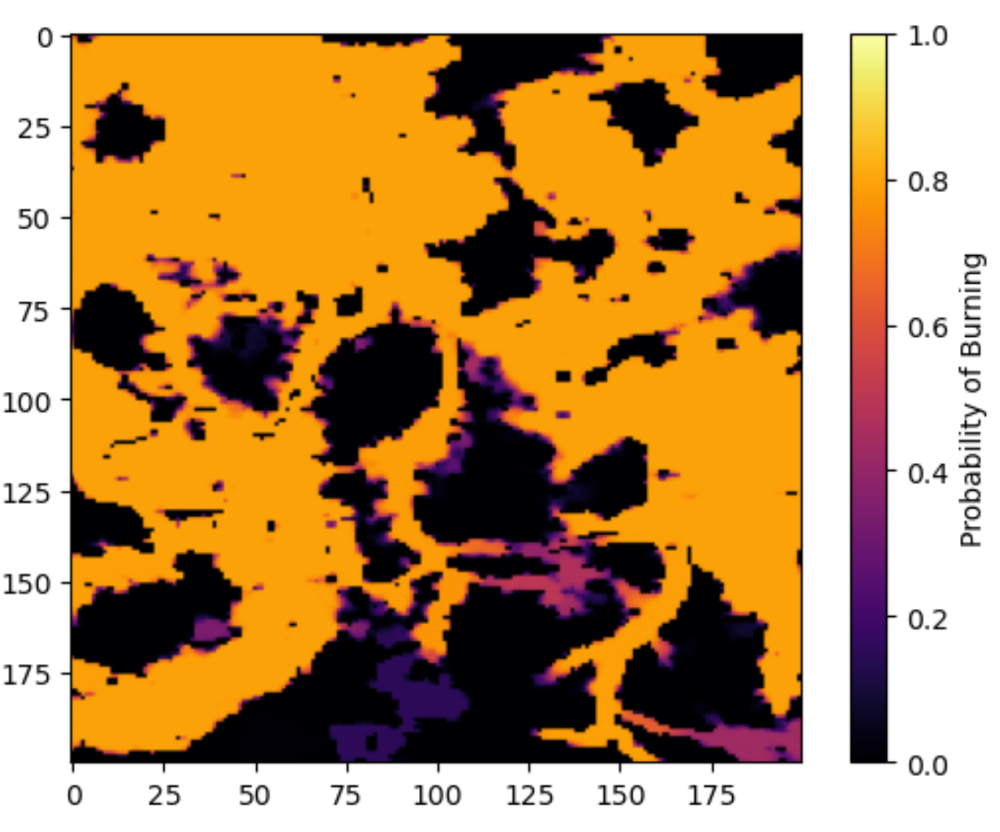

Wildfire Spread & Intervention Analysis
Modeled wildfire spread in Western Germany using a network-based cellular automaton. Incorporated wind, fuel, and rain dynamics to assess risk and intervention efficacy and validated empirical results through simulation convergence and mean-field approximation.
Methods: Network-based Cellular Automaton | Modified betweenness centrality • Stochastic dynamics with wind/fuel/rain • Mean-field approximation for validation